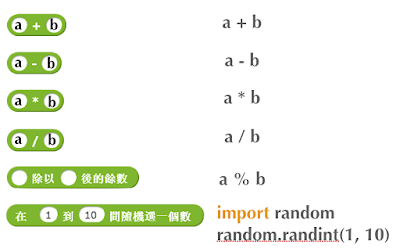
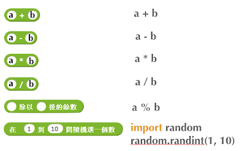
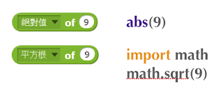
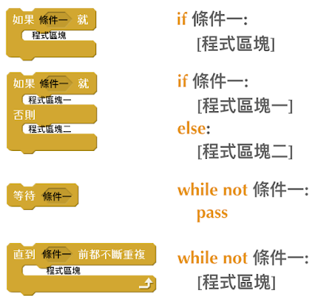
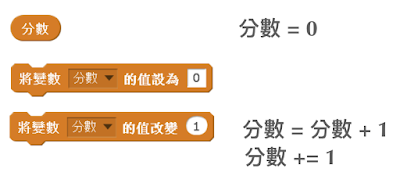
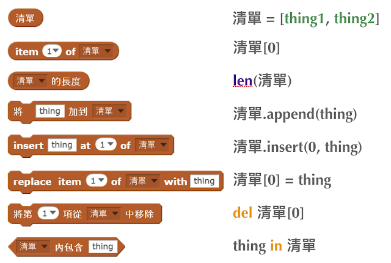
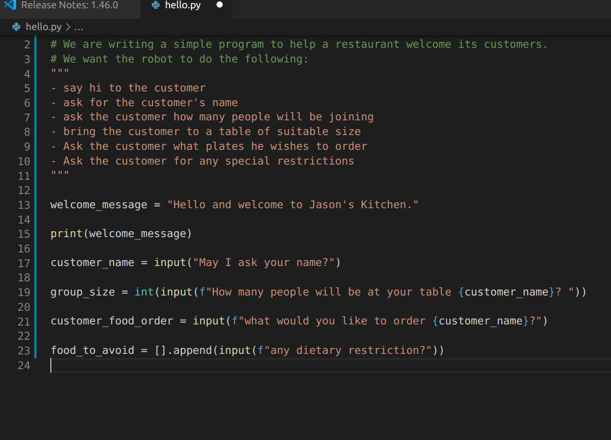

Jason Python Class 0/10
Touching Base and setting up
laurent
1 Lesson 1/9
1.1 Vocabulary to include in your BP
根据今天的反馈jason要用房间里的白板画出他脑海里的python big picture (要包含以下几项:
- python英雄
- computer 电脑
- Store 存储
- Process处理
- Machine Language机器语言
- Jason编程人员
- Envelope 信封
- Letter(信封里的信)
- Standard Input标准输入
- python`left hand ,
- python ’s right hand
- Standard Output标准输出
- Standard Error标准错误,，
- print/say(显示)
- return(返回)
1.2 从scratch迈向Python
尽量要自觉把scratch的知识和新学的PYTHON捆绑联系 今天我可以听出来他学过东西(比如我知道他学过如何“把a变量设置为某个值”，我想知道他还学过什么)。不用给我看他写得游戏这没有意义，我要的[> 就是scratch 的拼图模块之一)。 有兴趣请关注此链路：http://dl.icdst.org/pdfs/files3/4ffa4aa1bc45437ee8a47595b53aff94.pdf
2 lesson 2/9
2.1 python data types 数据类别：
Please put the following items within you BP
- boolean
- string (字符串）
- integer整数
- float 浮点数
- list列表
- dictionaries
Attention: 重点在string, integer and float Jason should add his hello.py to his big picture making sure he uses variable declaration. 他要把他的hello.py 也画进去。 hello.py 文件里面不要乱用双引号和括号！
3 lesson 3/9
input 输入
图左是 Scratch 的表达方式, 图右是 Python 的语法。在 Scratch 中提问的结果会放入「答案」这个变数, Python 可以使用 input() 达>
 output 输出
图左是 Scratch 的表达方式, 图右是 Python 的语法。
output 输出
图左是 Scratch 的表达方式, 图右是 Python 的语法。
 arithmetic operations 数学运算
图左是 Scratch 的表达方式, 图右是 Python 的语法。

arithmetic operations 数学运算
图左是 Scratch 的表达方式, 图右是 Python 的语法。

string operations 字串运算
图左是 Scratch 的表达方式, 图右是 Python 的语法。
 comparison and logical operations 字串运算
图左是 Scratch 的表达方式, 图右是 Python 的语法。
comparison and logical operations 字串运算
图左是 Scratch 的表达方式, 图右是 Python 的语法。

advanced math 进阶数学运算 图左是 Scratch 的表达方式, 图右是 Python 的语法。 
loop 回圈 图左是 Scratch 的表达方式, 图右是 Python 的语法。 
increment 变数 图左是 Scratch 的表达方式, 图右是 Python 的语法。 Python 可以使用中文「分数」当作变数名称。 
list 列表 图左是 Scratch 的表达方式, 图右是 Python 的语法。 Python 可以使用中文「清单」当作变数名称。 
4 lesson 4/9
4.1 Comments/注释
Comments are section of your code that will not be executed by Python, they are typically there to explain what is happening (useful when you work with others). 确保对模块, 函数, 方法和行内注释使用正确的风格 Python中的注释有单行注释和多行注释： Python中单行注释以 # 开头，例如：
# the following code is a print statement print("Hello World, my name is Jason!")
多行注释如下：
''' The code below is a simple print statement. I am giving python a string of characters, and I ask python to send it (to print it, to display it) onto the standard output (typically the standard output is the screen) ''' print("Hello World, my name is Jason and I am a coder")
多行注释用三个单引号 ’’’ 或者三个双引号 “”“ 将注释括起来
4.2 Creating variables
We talked about variables already. I said that variables are like labeled/named boxes that contain data. check the code below, and guess what python will do when it read it line by line:
jason_age = 10 jason_best_friend = "Milo" jason_birth_year = 2020 - jason_age print(jason_age) print(jason_best_friend) print(jason_birth_year)
4.3 Use variables as much as you can
Within the section about comments we asked python to print “Hello World, my name is…”. Although it is correct, each time we can put data in a box and give that box a name we should do it…so let’s do it!
hello = "Hello World, my name is Jason and I am coder". byebye = "It was a pleasure to meet you, see you soon" print(hello) print(byebye)
4.4 Wrap up and homework
Here is the code we looked at during the class. You asked me:
- “why are we using a ‘f’ ?”
- “what is the empty []?”
- “Line 19 and 23 why are we using 2 pairs of parentheses/parens?”
We will solve all those mysteries but for now please read the code below outloud, look at the different colors, and commit line 13,15 and 17 to memory (write those 3 lines 20 times!
